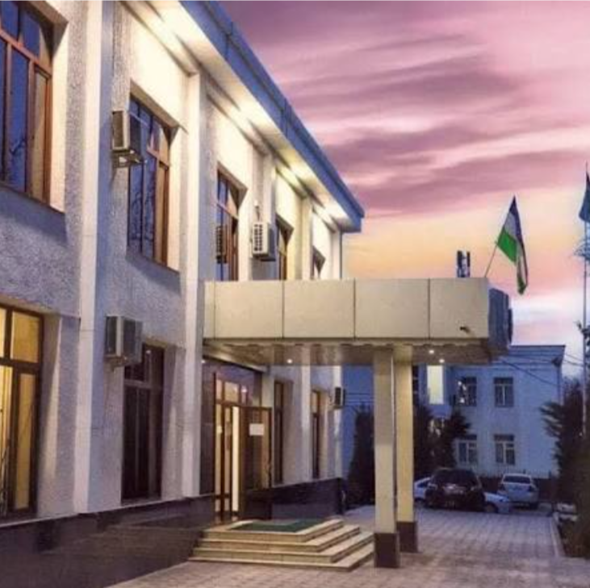

Urgut tumaniga xush kelibsiz!
Tog' etagidagi qadimiy shahar: mashhur bozor, ziyoratgohlar, hunarmandchilik va mehmondo'st odamlar diyori.

Sayt haqida
Urgut — Samarqand viloyatining tog' etagida joylashgan yirik tuman. Bu saytda tuman hokimligi, mahalla hokim yordamchilari, ziyoratgohlar, qishloqlar, maktablar, shifoxonalar, bozor va transport haqida ma'lumot topasiz.
Har bir kartani bossangiz, o'sha joy yoki muassasaning alohida sahifasi ochiladi.
- ~40 kmSamarqanddan
- ~1000 mdengiz sathidan
- 1 shahartuman markazi
- 12 QFYqishloq fuqarolar yig'ini
Bo'limlar

Ziyoratgohlar va joylar
Shirvoq ota, G'ovsulazon bobo, Teshiktosh, Chor-Chinor.
Batafsil
Qishloqlar
12 ta QFY va 7 ta shaharcha.
Batafsil
Hokimlik
Hokimlik va mahalla hokim yordamchilari.
Batafsil
Ta'lim
Maktablar, ixtisoslashgan maktab, pedagogika instituti.
Batafsil
Shifoxonalar
Tuman tibbiyot birlashmasi va poliklinikalar.
Batafsil
Bozor va banklar
Urgut bozori, Somonbozor, Korzinka, banklar.
Batafsil
Transport
Samarqand — Urgut va tuman ichida.
Batafsil
Bron formasi
Ekskursiya va qabulga yozilish.
Batafsil| Ko'rsatkich | Ma'lumot |
|---|---|
| Viloyat | Samarqand viloyati |
| Markaz | Urgut shahri |
| Tuzilma | 1 shahar, 7 shaharcha, 12 qishloq fuqarolar yig'ini |
| Eng yaxshi mavsum | mart–iyun va sentabr–noyabr |
| Shoshilinch raqam | 112 |